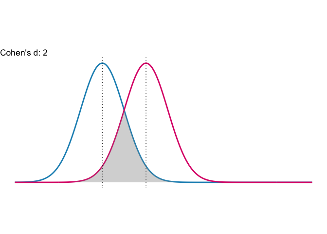
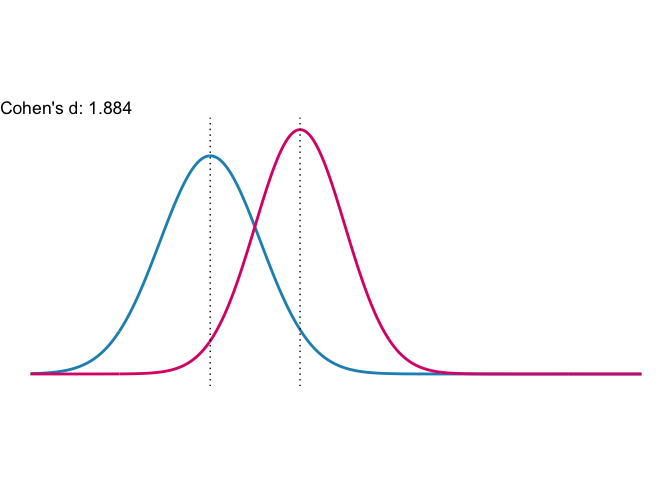

The goal of powerPsych is to provide behavioral scientists a package to calculate and understand effect size and power. powerPsych is a collection of statistical analysis tools, visualization, and calculator that are useful for behavioral researchers. This package is separated by three main analysis:
- Effect size
- Statistical power
- Sample size
This package was built for my STAT 545B course at the University of British Columbia. I built this package based this website’s calculations. Admittedly, their website is much easier to use but here I offer an alternative for people that prefer typesetting.
Installation
powerPsych is not on CRAN, you need to install it via GitHub:
devtools::install_github("andr3wli/powerPsych")Effect size
Effect size is a standardized way to report the strength of an apparent relationship. This part of the package dives into Cohen’s d. Cohen’s d is very popular in psychology. cohen.d is a function that exists already that computes the Cohen’s d and Hedge’s effect size statistic. I offer two new functions to help calculate and interpret this statistic. Cohen’s d can be categorized as follows:
| cohen’s d | Interpretation |
|---|---|
| 0.2 | A small effect |
| 0.5 | A medium effect |
| 0.8+ | A large effect |
cohens_dis a calculator that compares two populations/groups effect size via the two means.cohens_dconsumes the mean and standard deviation of of two groups and it calculates the statistic and informs the user of the effect size.cohens_plotis a visualization tool to help aid the interpretation of Cohen’s d value.
Here are some examples of cohens_plot:
cohens_plot(mean.one = 0, mean.two = 1, sd.one = 0.5, sd.two = 0.5)
cohens_plot(0, 1, 0.56, 0.5, overlap = F)
Note: Effect sizes are computed using the methods outlined in the paper “Olejnik, S. & Algina, J. 2003. Generalized Eta and Omega Squared Statistics: Measures of Effect Size for Some Common Research Designs Psychological Methods. 8:(4)434-447”.
Workflow
Here I will describe the workflow for building this package.
-
I loaded the
devtoolspackage and created a new package called powerPsychdevtools::create_package("powerPsych)
-
Initialized the package repo
use_git()
-
Created my R script for
cohens_duse_r("cohens_d")
Used Roxygen2 to create the documents and to export them
-
Created my tests for the function
use_testthat()use_test(cohens_d)
-
Created a README and rendered the R markdown file to a regular markdown file
use_readme_rmdbuild_readme()
-
Created my vignettes and built it
use_vignette("cohens_d")build_vignette()
-
Created the R package website
use_pkgdown()build_site()
Statistical power
I will build upon this package for the final assignment for STAT 545B. I plan on having a t-test calculator and a F-test calculator.
Sample size
I will build upon this package for the final assignment for STAT 545B. I plan on creating a function that can inform researchers the sample size needed so that the experiment has sufficient statistical power.
Acknowledgement
The STAT 545B teaching team deserves a huge amount of credit for teaching this course so wonderfully! Thank you to our prof Vincenzo Coia and our wonderful TAs Almas Khan, Diana Lin, Icíar Fernández Boyano, and Victor Yuan.
Code of Conduct
Please note that the powerPsych project is released with a Contributor Code of Conduct. By contributing to this project, you agree to abide by its terms.